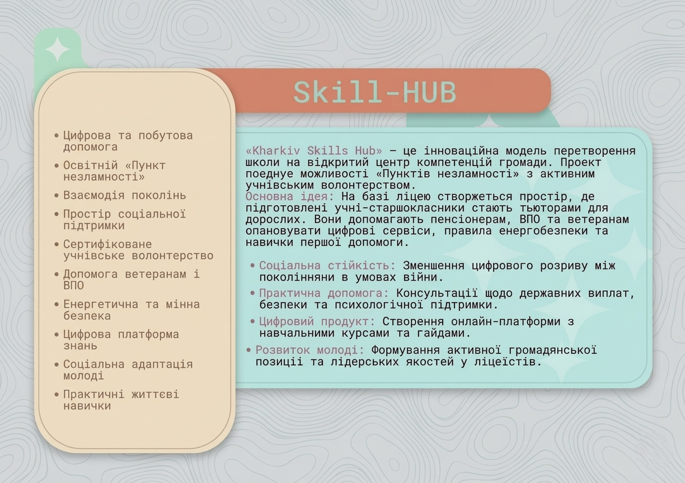
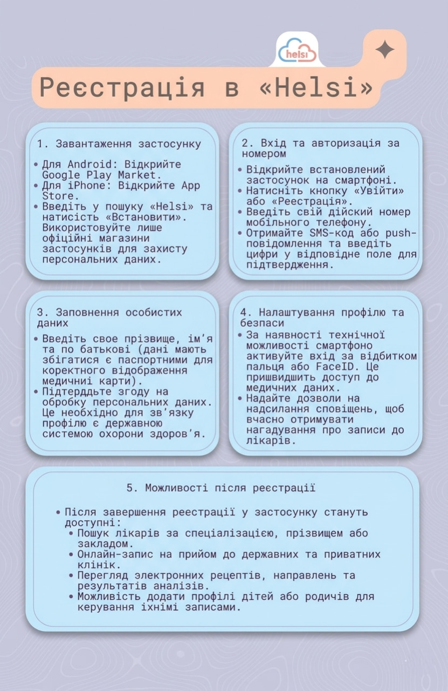
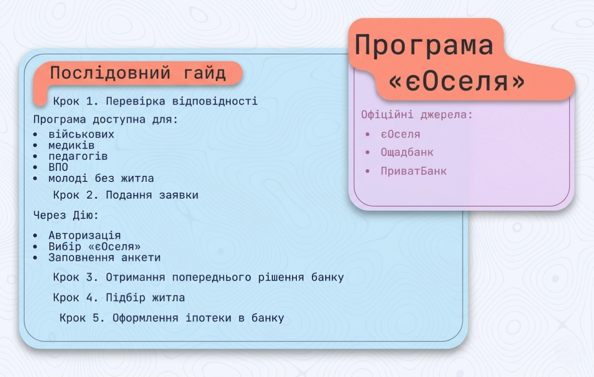
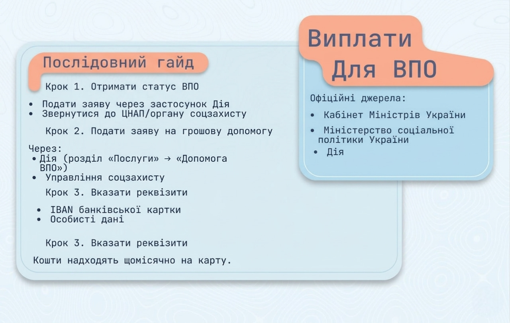
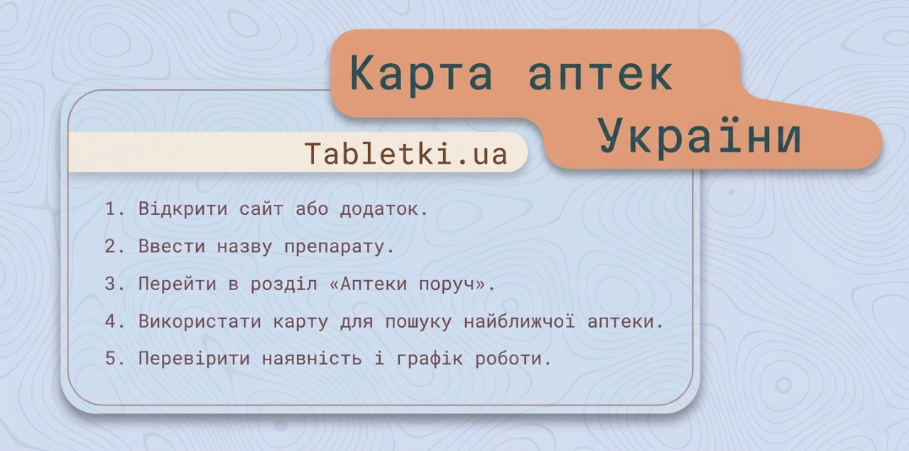
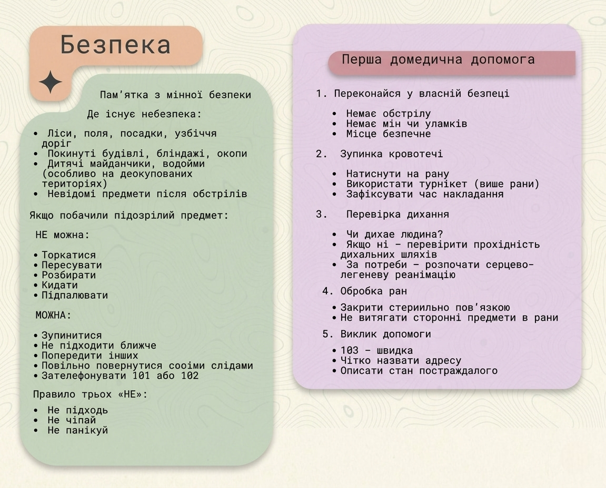
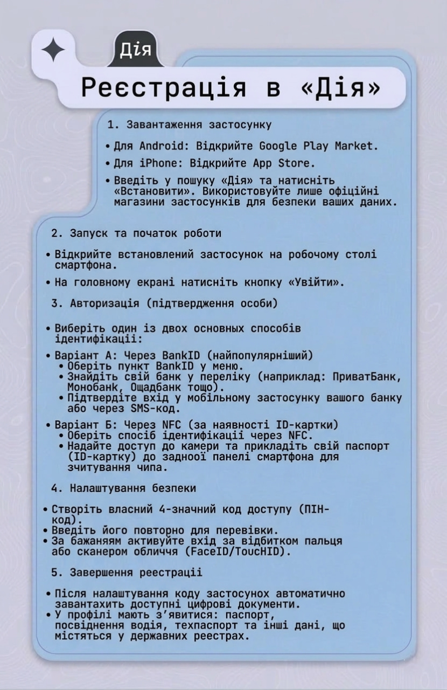
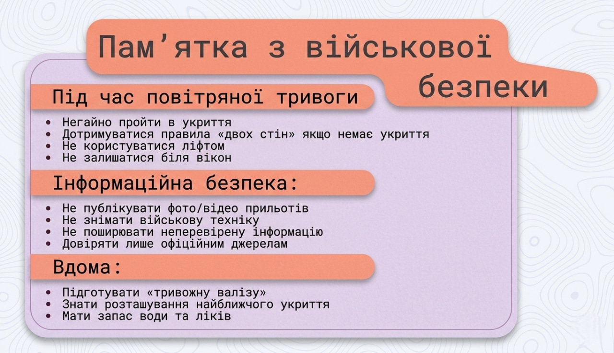

Skill-Hub
Гортай вниз — читай матеріал і проходь тести.
Чотири напрямки — безліч знань.

ФейкоДракончик
Що таке фейк?
Фейк (англ. fake — підробка) — це навмисно створена неправдива інформація, яка подається як справжня новина. На відміну від помилки журналіста, фейк завжди має мету: обманути, залякати, посіяти паніку або змінити ставлення до певної події.
Чому фейки так швидко поширюються?
- Вони прості і дають легкі відповіді на складні питання.
- Вони використовують емоції (клікбейтні заголовки).
- Ми схильні вірити тому, що підтверджує нашу точку зору (когнітивне упередження).
Як перевірити джерело
Перед тим як поширити пост або повірити новині, зроби три кроки перевірки:
- Хто автор? Перевір профіль у соцмережі або сайт. Якщо сайт називається "Super-News-24" і не має розділу "Про нас" — це підозріло.
- Першоджерело. Звідки взяли інформацію? Якщо посилаються на "кума знайомого депутата" — це не джерело. Шукай посилання на офіційні органи або великі міжнародні агенції (Reuters, BBC тощо).
- Дата. Фейкороби часто використовують старі відео або фото, видаючи їх за сьогоднішні події.
Використовуй зворотний пошук зображень у Google. Це допоможе дізнатися, коли насправді було зроблено фото.
Deepfake та маніпуляції
Технології не стоять на місці. Сьогодні за допомогою штучного інтелекту можна створити відео, де відома людина каже те, чого ніколи не говорила. Це і є Діпфейк (Deepfake).
Ознаки діпфейку:
- Дивне кліпання очима (або його відсутність).
- Незбіг рухів губ із промовою.
- "Мильне" зображення навколо обличчя.
Пам'ятай: навіть відео сьогодні не є 100% доказом. Завжди шукай інший підтверджений ракурс або офіційний коментар.
Критичне мислення
Когнітивні упередження
Наш мозок любить спрощувати світ. Когнітивні упередження — це ментальні пастки, які заважають нам думати об'єктивно.
Цей ефект активно використовується у пропаганді, рекламі та маніпуляціях. Знати про нього — вже половина захисту.
Логічні хиби
Хибна аргументація часто використовується в суперечках. Наприклад, апеляція до авторитету або солом'яне опудало.
- Ad Hominem — атака на людину замість аргументу.
- Strawman — спрощення позиції опонента до абсурду.
- Апеляція до авторитету — "він сказав, значить правда".
Аналіз аргументів
Як перевірити, чи аргумент сильний? Розділи його на тезу, докази та висновок.
Теза → Доказ → Висновок. Якщо будь-яка ланка відсутня або хибна — аргумент слабкий.
Цифрова безпека
Паролі та акаунти
Твій пароль — це ключ від квартири. Не використовуй '123456' або дату народження.
- Використовуй мінімум 12 символів (літери, цифри, знаки).
- Кожен сервіс — унікальний пароль.
- Увімкни двофакторну автентифікацію (2FA).
Фішинг та скам
Фішинг — це спроба виманити твої дані через підробні сайти або листи.
Перевіряй адресу сайту, шукай замок (https) у рядку браузера.
Приватність у мережі
Те, що потрапило в інтернет — залишається там назавжди. Налаштуй приватність у соцмережах.
- Не публікуй паспортні дані та місцезнаходження.
- Остережись відкритих Wi-Fi мереж для важливих операцій.
- Регулярно перевіряй, хто бачить твій профіль.
Соціальні мережі
Алгоритми та бульбашки
Соцмережі показують нам те, що нам подобається. Так виникає інформаційна бульбашка.
Маніпуляції в мережах
Боти, тролі та астротерфінг — як створюється ілюзія масової думки.
- Боти — фейкові акаунти для накрутки реакцій.
- Тролі — провокатори для розпалювання конфліктів.
- Астротерфінг — організована імітація "органічного" руху.
Захист репутації
Твій цифровий слід впливає на майбутню роботу та навчання.
Все, що ти лайкав, писав або постив — формує твій цифровий портрет. Думай перед публікацією.
Гайди
Skill-HUB
«Kharkiv Skills Hub» — це інноваційна модель перетворення навчального простору на відкритий центр компетенцій громади. Проєкт поєднує можливості «Пунктів незламності» з активним молодіжним волонтерством.
Які проблеми вирішує проєкт?
- Соціальна стійкість: Зменшення цифрового розриву між поколіннями в умовах війни.
- Практична допомога: Консультації щодо державних виплат, безпеки та психологічної підтримки.
- Цифровий продукт: Створення онлайн-платформи з навчальними курсами та гайдами.
- Розвиток молоді: Формування активної громадянської позиції та лідерських якостей у молоді.
Цифрова та побутова допомога, Освітній «Пункт незламності», Взаємодія поколінь, Простір соціальної підтримки, Сертифіковане молодіжне волонтерство, Допомога ветеранам і ВПО, Енергетична та мінна безпека, Цифрова платформа знань, Соціальна адаптація молоді, Практичні життєві навички.
Реєстрація в «Helsi»

1. Завантаження застосунку
- Для Android: Відкрийте Google Play Market.
- Для iPhone: Відкрийте App Store.
- Введіть у пошуку «Helsi» та натисніть «Встановити».
2. Вхід та авторизація за номером
- Відкрийте встановлений застосунок на смартфоні і натисніть кнопку «Увійти» або «Реєстрація».
- Введіть свій дійсний номер мобільного телефону.
- Отримайте SMS-код або push-повідомлення та введіть цифри у відповідне поле для підтвердження.
3. Заповнення особистих даних
- Введіть своє прізвище, ім’я та по батькові (дані мають збігатися з паспортними для коректного відображення медичної карти).
- Підтвердьте згоду на обробку персональних даних. Це необхідно для зв'язку профілю з державною системою охорони здоров'я.
4. Налаштування профілю та безпеки
- За наявності технічної можливості смартфона активуйте вхід за відбитком пальця або FaceID. Це пришвидшить доступ до медичних даних.
- Надайте дозволи на надсилання сповіщень, щоб вчасно отримувати нагадування про записи до лікарів.
Пошук лікарів, онлайн-запис на прийом, перегляд електронних рецептів, направлень та результатів аналізів, а також можливість керувати записами дітей або родичів.
Програма «єОселя»

Державна програма іпотечного кредитування житла доступна для військових, медиків, педагогів, ВПО та молоді без власного житла.
Послідовний гайд
- Крок 1. Подання заявки. Зайдіть у Дію, авторизуйтеся, виберіть послугу «єОселя» та заповніть анкету.
- Крок 2. Рішення банку. Отримайте попереднє рішення від обраного банку-партнера.
- Крок 3. Пошук. Знайдіть та підберіть підходяще вам житло.
- Крок 4. Іпотека. Оформіть іпотеку безпосередньо у відділенні банку.
Сайт єОселя, Ощадбанк, ПриватБанк.
Виплати для ВПО

Послідовний гайд отримання виплат
- Отримати статус ВПО. Подати заяву на отримання статусу через застосунок Дія або звернутися офлайн до найближчого ЦНАП/органу соцзахисту.
- Подати заяву на грошову допомогу. Також можна зробити через Дію (розділ «Послуги» → «Допомога ВПО») або особисто в управлінні соцзахисту.
- Вказати реквізити. Вам знадобиться ваш IBAN банківської картки та особисті дані.
Кабінет Міністрів України, Міністерство соціальної політики України, Портал Дія.
Карта аптек України (Tabletki.ua)

Сервіс Tabletki.ua допомагає знайти ліки у найближчих аптеках з актуальними цінами.
Як шукати ліки?
- Відкрийте сайт або завантажте додаток.
- Введіть назву потрібного препарату в рядок пошуку.
- Перейдіть у зручний розділ «Аптеки поруч».
- Використайте вбудовану карту для пошуку найближчої до вас аптеки на районі.
- Перевірте наявність препарату, ціну та графік роботи обраної аптеки.
Пам'ятка з мінної безпеки

Де існує небезпека:
- Ліси, поля, посадки, узбіччя доріг.
- Покинуті будівлі, бліндажі, окопи.
- Дитячі майданчики, водойми (особливо на деокупованих територіях).
- Невідомі предмети після обстрілів.
Якщо побачили підозрілий предмет:
❌ НЕ можна:
- Торкатися
- Пересувати
- Розбирати
- Кидати
- Підпалювати
✅ МОЖНА:
- Зупинитися
- Не підходити ближче
- Попередити інших
- Повільно повернутися своїми слідами
- Зателефонувати 101 або 102
- Не підходь
- Не чіпай
- Не панікуй
Перша домедична допомога

- Переконайся у власній безпеці
- Немає обстрілу
- Немає мін чи уламків
- Місце безпечне
- Зупинка кровотечі
- Натиснути на рану
- Використати турнікет (вище рани)
- Зафіксувати час накладання
- Перевірка дихання
- Чи дихає людина?
- Якщо ні – перевірити прохідність дихальних шляхів
- За потреби – розпочати серцево-легеневу реанімацію
- Обробка ран
- Закрити стерильною пов'язкою
- Не витягати сторонні предмети з рани
- Виклик допомоги
- 103 – швидка
- Чітко назвати адресу
- Описати стан постраждалого
Пам'ятка з військової безпеки

Під час повітряної тривоги
- Негайно пройти в укриття.
- Дотримуватися правила «двох стін», якщо немає укриття.
- Не користуватися ліфтом.
- Не залишатися біля вікон.
Інформаційна безпека:
- Не публікувати фото/відео прильотів.
- Не знімати військову техніку.
- Не поширювати неперевірену інформацію.
- Довіряти лише офіційним джерелам.
- Підготувати «тривожну валізу».
- Знати розташування найближчого укриття.
- Мати запас води та ліків.